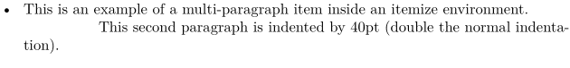
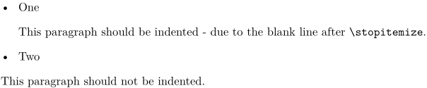
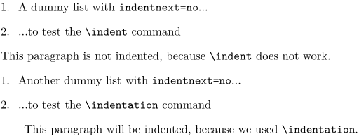

Contents
In plain TeX, controlling indentation is accomplished by configuring parindent, and each new paragraph is indented by that value, unless explicitly begun with noindent. Environments can provide a noindent at the end of their definitions, and if the user wants to overrule that, he can add an explicit indent at the beginning of the next paragraph. For the most part, LaTeX follows the same convention.
Indentation in ConTeXt is a bit different: it mostly does not rely on the presence of blank lines, but uses \setupindenting to manage general indentation, the indentnext=yes/no/auto key on environments to enable/disable indentation after them, and \indentation and \noindentation to manually force/disable an indentation.
The commands \indent, \noindent, \indenting, and \noindenting are present for historical reasons, but should not be used. Especially, they should not be confused with \indentation and \noindentation
Setting up indentation for the whole document
Indentation involves two things: when to indent, and how much to indent. In ConTeXt, these can be specified using \setupindenting[...]. There are three types of keys for this command:
-
no yes: turn indentation on/off' -
none small medium big dimension: size of indents -
first next: turn indentation of first paragraph on/off. Can be overridden by environments withindentnext=yes/no/auto. -
odd even: indent odd/even lines in \obeylines scopes -
normal: the globally defined size of indent. Useful when used as the values of theindentingkey of different environments.
Setting up indentation after an environment
\setupindenting does not take care of indenting after environments, such as ConTeXt's itemizes, enumerations, definitions, formulas and floats. It also does not take care of indenting after heads such as chapters, sections, and subsections.
The setup command of these environments provides an indentnext key to configure the indentation behaviour after the environment. The indentnext key can take one of three values:
-
yesdeclares the first paragraph following the environment should always be indented. -
nodeclares the first paragraph following the environment should never be indented. -
autodeclaresindentnext=autothe next paragraph should be indented only if there is a blank space after the environment. Settingindentnext=autois equivalent to the default plain TeX and LaTeX behaviour.
Some examples:
% Do not indent paragraphs after \stopitemize \setupitemgroup[itemize][indentnext=no] % indent paragraphs after section heads \setuphead[section][indentnext=yes] % indent the paragraphs after all sectioning heads \setupheads[indentnext=yes] % indent paragraphs after formulas if there is a blank space in between \setupformulas[indentnext=auto]
Setting up indentation inside environments
There is one case that is not taken care of by \setupindenting and the indentnext key: indentation of paragraphs inside multi-paragraph environments such as itemizes, descriptions, and enumerations. By default ConTeXt does not indent such paragraphs. The setup commands of these environments provides an indenting= key to configure the indentation behaviour of paragraphs inside these environments. This key takes the same arguments as the \setupindenting command does. An example using \setupitemgroup:
-
\setuppapersize[A5] \setupindenting[medium,yes] \setupitemgroup[itemize][indenting={40pt,next}] \startitemize \item This is an example of a multi|-|paragraph item inside an itemize environment. This second paragraph is indented by 40pt (double the normal indentation). \stopitemize
gives
- 
"indentnext=auto" demo
-
\setupindenting[medium,yes] \setupitemize[indentnext=auto] \startitemize \item One \stopitemize This paragraph should be indented - due to the blank line after \type{\stopitemize}. \startitemize \item Two \stopitemize This paragraph should not be indented.
gives:
- 
Manual indentation
No matter how careful we are with all the settings, there are some cases which cannot be taken care of by automatic indentation, and we have to tell ConTeXt how to indent. This is done with \indentation and \noindentation. The Plain TeX (and LaTeX) commands \indent and \noindent are defined in ConTeXt, but are not hooked into the indentation mechanism.
Suppose the default setup for an article is
\setupitemgroup [itemize] [indentnext=no]
Now, if we want to indent after an itemize, starting the next paragraph with \indent does not work; to get indentation we have to say \indentation. For example,
-
\setuppapersize[A5] \setupindenting [big,yes] \setupitemgroup [itemize] [indentnext=no] \startitemize[n] \item A dummy list with \type{indentnext=no}... \item ...to test the \tex{indent} command \stopitemize \indent This paragraph is not indented, because \tex{indent} does not work. \startitemize[n] \item Another dummy list with \type{indentnext=no}... \item ...to test the \tex{indentation} command \stopitemize \indentation This paragraph will be indented, because we used \tex{indentation}.
gives
- 
Paragraphs with hanging indention
If you want to indent paragraphs from the second line on, you can use this bit from Hans Hagen:
\starttext \definestartstop [exdent] [before={\startnarrower[left]\setupindenting[-\leftskip,yes]}, after=\stopnarrower] \setuphead[section][indentnext=yes] \section{Test} \startexdent \input knuth \endgraf \stopexdent \stoptext